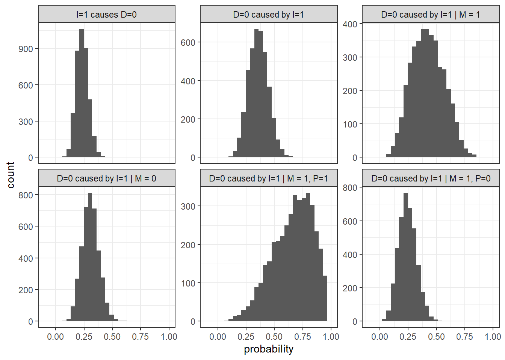

Chapter 9 Mixed-Method Application: Inequality and Democracy Revisited
In chapter 7 we drew inferences from a ‘theory based’ democracy and inequality model on data. Here we train the model on data before making case level inferences, allowing for the possibility of confounding in the assignment of inequality. In this case we update our beliefs over the population parameters and not just over the case level parameters. Thus we simultaneously learn about our theory and use our theory to learn about cases. The data informed inferences are, on the whole, weaker than the theory based inferences of Chapter 7.
FLAG: Change causal types to unit types everywhere.
9.1 A trained model
We now apply these ideas on mixed method research to our model of democracy and inequality. The key difference to the exercise in in Chapter 7 is that whereas there we took the model as given, and sought to draw inferences to case given the model, the model now becomes an object that we both learn from and learn about. In essence we use the data on many cases to update our beliefs about the general model and then use this "trained’ model to then make inferences about cases.
Along with this change in goals come some changes in the structure of the model:
- Instead of positing a belief about the causal type of a given case, \(\theta\), we now need to posit a belief over the distribution of nodal types—that is, over \(\lambda\). Concretely, whereas in the simple process tracing model we specified that inequality has a positive effect on mobilization for some share of units, we now specify a distribution over the proportion of units for which inequality could have a positive effect, ranging anywhere from 0 to 1. This means that we can now update on these population-level distributions as the model confronts data.
The same applies to beliefs about confounding. Since \(\lambda\) may include not beliefs about the joint distribution of nodal types, we can set priors on or allow for the possibility of confounding in our model. In the application below, we focus on potential confounding in the relationship between inequality and mobilization—the possibility that inequality may be more or less likely in places where inequality would induce mobilization. Here we do not set a prior belief about the direction or magnitude of such confounding, but we set up the parameter matrix to allow for the possibility of confounding. This allows us, in turn, to learn about confounding from the data.
Model definition in code
We begin with the same basic model as we used in Chapter 7, with inequality (\(I\)) potentially affecting democratization (\(D\)) both through a direct pathway and through an indirect pathway mediated by mobilization (\(M\)). International pressure (\(P\)) is also a “parent” of democratization.
Further, we impose the same set of qualitative restrictions, ruling out a negative effect of inequality on mobilization, a direct positive effect of inequality on democratization, a negative effect of mobilization on democracy, and a negative effect of pressure on democratization. Note that this setup allows for inequality to have a positive (through mobilization) effect on democratization, a negative (direct) effect on democratization, or of course no effect at all.
Finally, we allow for confounding. The theoretical intuition we want to instantiate in the model is that the level of inequality could be endogenous to inequality’s effect on mobilization. In particular, in places where mobilization would pose a mobilizational threat, governments may work harder to reduce inequality. To allow for this possibility, we need to create distinct elements of \(\lambda\) representing the conditional distribution of \(I\)’s nodal types given \(M\)’s: one parameter for \(\theta^I\)’s distribution when \(M\)’s nodal type is \(\theta^M_{01}\), and another parameter for \(\theta^I\)’s distribution when \(M\)’s nodal type is something else.
We can use gbiqq to define the model, with these restrictions and this confounding possibility, as follows.
model <- make_model("I -> M -> D <- P; I -> D") %>% #Specify the DAG
set_restrictions(c(
"(M[I=1] < M[I=0])",
"(D[I=1] > D[I=0]) | (D[M=1] < D[M=0]) | (D[P=1] < D[P=0])")) %>% #Exclude a set of negative-effect and positive-effect nodal types.
set_confound(list(I = "(M[I=1] > M[I=0])")) # Allow I to have a distinct conditional distribution when M's nodal type is \theta_01. This model, with confounding, is represented graphically as in Figure ??. The possibility of confounding is represented with the bidirected edge, connecting \(I\) and \(M\).

9.2 Data
As in Chapter 7, wewill confront the model with data drawn from coding narratives in the Supplementary Material for Haggard and Kaufman (2012). However, rather than implementing the analysis case-by-case, we now derive leverage from the joint distribution of the data to train the model—that is, to update its parameters, allowing us to derive estimates for a range of population- and case-level estimands.
Here is a snapshot of the data:
Note that this is not a rectangular dataset in that Haggard and Kaufman’s collection of clues was conditional on the outcome, \(D=1\): they gathered qualitative data on the presence of international pressure and the presence of mass-mobilization only for those cases that democratized. This is not an uncommon case-selection principle. The analyst often reasons that more can be learned about how an outcome arises by focusing in on cases where the outcome of interest has in fact occurred. (We assess this case-selection intuition, in the context of model-based inferences, in Chapter 13.)
| Case | P | I | M | D |
|---|---|---|---|---|
| Afghanistan | NA | 1 | NA | 0 |
| Albania | 0 | 0 | 1 | 1 |
| Algeria | NA | 0 | NA | 0 |
| Angola | NA | 1 | NA | 0 |
| Argentina | 0 | 0 | 1 | 1 |
| Bangladesh | 0 | 0 | 0 | 1 |
The raw correlations between variables is shown in Table ??. Some correlations are missing because, as mentioned, data on some variables were only gathered conditional on the values of others. For those quantities where we do see correlations, they are not especially strong. There is, in particular, a weak overall relationship between inequality and democratization — though, of course, this is consistent with inequality having heterogeneous effects across the sample. The strongest correlation in the data is between \(P\) and \(M\), which are assumed to be uncorrelated in the model, though this correlation is also quite weak.
## Warning in cor(data[, -1], use = "pairwise.complete.obs"): the standard
## deviation is zero| P | I | M | D | |
|---|---|---|---|---|
| P | 1.000 | 0.157 | -0.177 | NA |
| I | 0.157 | 1.000 | 0.114 | -0.154 |
| M | -0.177 | 0.114 | 1.000 | NA |
| D | NA | -0.154 | NA | 1.000 |
9.3 Inference
With data and model in hand, we can now update our model to get posteriors on the distribution of all admissible causal types. In practice this is done by constructing a stan model that maps from a set of parameters to a distribution on causal types, which in turn provide a likelihood function for observable data. (Using the gbiqq package the posterior is calculated by gbiqq(model, data).)
The parameters
param_mat <- get_parameter_matrix(model)
dim(param_mat)## [1] 29 240FLAG: Need to talk a bit through what’s happening here.
9.3.1 Did inequality cause democracy?
We have used the data to update on \(\lambda\): our beliefs about the distributions of nodal types, including about their joint distributions (i.e., confounding). We can now ask gbiqq to use the updated parameters to calculate any estimand of interest.
One set of questions we can ask of the updated model is about the probability that high inequality causes democratization. We can pose this question at different levels of conditioning. For instance, we can ask:
For all cases. For what proportion of cases in the population does inequality have a positive effect on democratization?
For all cases displaying a given causal state and outcome. Looking specifically at those cases that in fact had high inequality and democratized, for what proportion was the high inequality a cause of democratization?
For cases displaying a given causal state and outcome, and with additional clues present or absent. What if we have also collected clues on mediating or moderating nodes? For instance, for what proportion of high-inequality, democratizing cases with mobilization did inequality cause the outcome? For what proportion without mobilization? Likewise for the presence or absence of international pressure?
We ask gbiqq now to query \(\lambda\)’s posterior distribution to generate posterior distributions for each of these quantities. We can define our queries quite simply in terms of the causal types that correspond to the effect of interest and then take the conditional probability of these. We present the code and results of these operations below and in Figure ??.
FLAG: Let’s graph the priors for each of these queries next to the posteriors.

FLAG: Not sure how much it is worth saying here substantively about the results given how strongly they are driven by the restrictions.
We can see that the share of cases overall in which inequality causes democratization is estimated to be very low, with a good deal of confidence. The proportion is considerably higher for those cases that in fact experienced high inequality and democratization. The proportion of positive causal effects is believed to be even higher for those in which mobilization occurred, especially where an alternative causes—international pressure—was absent, though our uncertainty about this share is also very high. We also see that the absence of mobilization tells us for certain that democratization was not caused by inequality. Interestingly, however, this result derives from the model restrictions, rather than from the data: under the restrictions we imposed, a positive effect of inequality could operate only through mobilization.
9.3.2 Did inequality prevent democracy?
We can undertake the same exercise for a negative causal effect, generating estimates a comparable set of estimands, as shown in Figure ??.

We see that inequality appears, overall, more commonly to prevent democratization than to cause it. We are, moreover, most confident that inequality played a preventative role in those cases in which there was mobilization and international pressure—both of which could have generated democratization—but still no democratization occurred.
Importantly, in the mixed-data setting, we can think of our estimands in both population-level and case-level terms. We have initialy posed these question as population-level queries. The results in Figures ?? and ?? can be understood as our estimates of the share of cases in the population, with a given set of characteristics, for which a particular causal effect holds. Yet these distributions, by the very same token, represent our beliefs about the probability that \(I\) had a positive causal effect in an individual case. Thus, for instance, graph \(PC2\) gives us the posterior on the proportiuon of \(I=D=M=1\) cases in the population for which \(I=1\) caused \(D=1\). But it also tells us, for an individual case randomly selected from the population of \(I=D=M=1\) cases, the probability that high inequality caused democratization in the case. The key difference from the pure process-tracing setup is that here our case-level inferences are informed by data from the population, rather than population-level beliefs serving only as priors.
9.4 Prior / posterior comparison for multiple estimands
Estimands can be calculated for both the prior and posterior distributions.
Inequality causes democratization:
## Warning in kable_markdown(x, padding = padding, ...): The table should have
## a header (column names)Table: (#tab:IcausesDem)Prior
|| || || ||
## Warning in kable_markdown(x, padding = padding, ...): The table should have
## a header (column names)Table: (#tab:IcausesDem)Posterior
|| || || ||
Inequality prevents democratization:
## Warning in kable_markdown(x, padding = padding, ...): The table should have
## a header (column names)Table: (#tab:IpreventsDem)Prior
|| || || ||
## Warning in kable_markdown(x, padding = padding, ...): The table should have
## a header (column names)Table: (#tab:IpreventsDem)Posterior
|| || || ||
FLAG: Multiple estimands:
Other links in the causal network: What is the proportion of cases in which \(M\) has a positive effect on \(D\)? The proportion in which \(P\) has a positive effect on \(D\)?
Confounding: What is the difference in probability of \(I=1\) for cases in which \(M\) has a positive effect on \(D\) vs. cases in which it does not?
FLAG: Relax qualitative restrictions
As in Chap 7, allow for negative effects of \(I\) on \(M\), with low prior probability but a good deal of uncertainty.
Then we can
Examine sensitivity to restrictions by comparing results with those from the more restricted model
Examine PATHWAYS as an estimand. So most effects seem to be negative, but are they direct effects (consistent with Boix) or indirect effects running through reduced mobilization (consistent with Ansell and Samuels)?
9.5 Discussion
References
Haggard, Stephan, and Robert R Kaufman. 2012. “Inequality and Regime Change: Democratic Transitions and the Stability of Democratic Rule.” American Political Science Review 106 (03): 495–516.